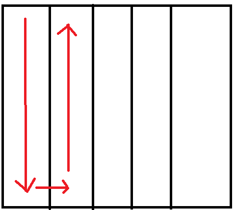

Il RobotCleaner deve essere in grado di coprire tutta la superficie di tutta la stanza.
Si assuma che nella stanza non possano essere presenti, per adesso, ostacoli di alcun tipo.
Il RobotCleaner deve essere in grado di fermarsi durante lo svolgimento delle sue azioni e successivamentre proseguire, qualora gli venga impartito tale comando.
Requirement analysis
Problem analysis
RobotCleaner:
Il RobotCleaner deve essere in grado di coprire con una strategia ben definita la superficie di tutta la stanza.
Un primo quesito da porre al committente e' quello riguardante la forma geometrica della stanza:
1. Il RobotCleaner deve essere pensato per operare sempre nella medesima stanza?
2. In caso debba operare, ora o in futuro, su stanze diverse esse presenteranno tutte una forma del pavimento quadrada/rettangolare? Oppure il pavimento della stanza puo assumere altre forme geometriche come un cerchio ecc?
Continueremo ad assumere che la stanza o le stanze abbiano tutte un pavimento con forma rettangolare.
Al fine di coprire la superficie della stanza deve essere realizzata una stateggia atta a questo:
Tale strategia prevede che il RobotCleaner copra la superficie muovendosi nella stanza, suddivisa in varie colonne, da una colonna all'altra.

Si pone il problema riguardante la comunicazione con il RobotCleaner se essa debba avvenire in modo sincrono o asincrono. Al fine del soddisfacimento del secondo requisito e' opportuno adottare una comunicazione asincrona.
Autovalutazione dopo discussione a lezione del 26/04:
Voto: C --> vista la mancanza dell'analisi del testo e dei requisiti, e di ulteriori strategie da poter adottare per coprire la superficie della stanza oltre a quella presentata.
Test plans
Al fine di verificare il corretto funzionamento del coportamento del RobotCleaner deve essere realizzato un opportuno piano di testing.
Una volta avviato il RobotCleaner deve essere verificato che esso copra per intero la superficie della stanza.
Successivamente il RobotCleaner deve essere nuovamente avviato e durante la sua esecuzione deve ricevere un comando che lo blocchi e successivamente, dopo un opportuno comando, deve essere in grado di riprendere la sua normale esecuzione da quel momento in poi, completando il suo compito.